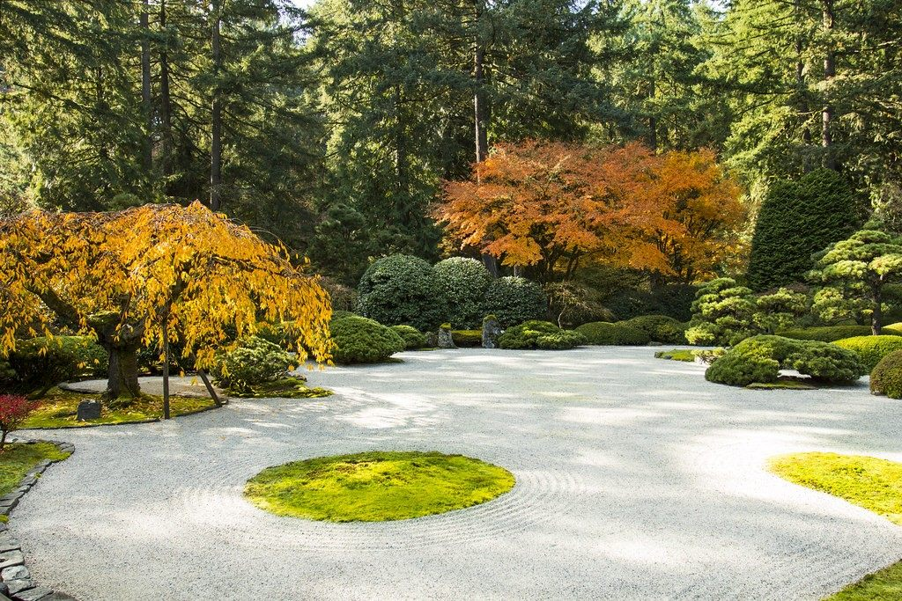

STORY
良寛も愛した、静けさという贅沢
山を登った先に、一軒の古民家があります。呼ばなければ、誰も来ません。ここにあるのは、ただ静かな時間だけです。
01
良寛と国上山
良寛は、江戸時代後期を生きた僧侶であり、歌人・書家でもありました。子どもたちと手まりをついて遊んだという逸話でも知られ、飾らない生き方と、静かで澄んだ言葉を今に残しています。良寛は晩年、この国上山のふもとで暮らしたと伝えられています。国上山の中腹には国上寺があり、今も多くの人がこの地を訪れます。
日月カフェは、この国上山麓にひっそりと佇む一軒の古民家カフェです。当店自体は史跡ではありませんが、良寛が愛したと伝わるこの土地の静けさを、今もそのまま受け継いでいます。良寛が眺めていたかもしれない山の稜線を、どうぞ縁側からゆっくりとご覧ください。
02
一軒の古民家
都会の喧騒から離れ、山深く奥まった中に、一軒の古民家がぽつんと佇んでいます。日月カフェは、この古民家をそのままの佇まいを活かして改築したカフェです。
山道を登り、木々の間を抜けた先にようやく見えてくるこの建物は、たどり着くまでの道のりごと、ひとつの体験になっています。建物の中は広く、落ち着いた雰囲気に満ちています。急ぐ理由が、ここには何もありません。
03
庭園と、四季の彩り
手入れの行き届いた庭園は、季節ごとにその表情を変えます。初夏には涼しげな新緑が庭を満たし、梅雨の頃には紫陽花が静かに彩りを添えます。夏、山に吹き上げる風が心地よく通り抜け、蝉の声とアゲハ蝶の舞う庭園で、しばしの間、日常の喧騒を忘れることができます。
縁側の席に腰を下ろせば、そんな庭園の景色が、そのまま額縁のように広がります。好きな席をお選びいただけるスタイルなので、その日の気分でお気に入りの一席を見つけてください。

新緑
紫陽花
蝉時雨
アゲハ蝶
04
静けさをデザインする、接客
日月カフェの接客は、一般的な「おもてなし」とは少し違うかもしれません。お呼びいただくまで、店員がお席にうかがうことはありません。お客様同士の距離も、近すぎない座席配置を大切にしています。
窓を開ければ、山から吹き抜ける風とともに、テラス席のような開放感を味わっていただけます。扉を閉めれば、個室のように落ち着いて過ごせる席もあります。誰にも急かされず、干渉されない時間。それが、私たちがこの場所でご用意したいものです。
05
季節と休業のご案内
日月カフェは、春・夏・秋の期間を中心に営業し、12月頃より冬季休業に入ります(季節・天候により変動する場合があります)。雪深い山道となる冬季を除き、それぞれの季節ならではの庭園の表情をお楽しみいただけます。営業日・営業期間の詳細は、アクセス・ご予約ページ、またはInstagramでご確認ください。
日が昇り、月が満ちる。そうして巡る時間の中で、店を開く日だけがそっと灯ります。「日月」という名の通り、限られた日にしか開かないからこそ、訪れるひとときを大切にしたいと思っています。